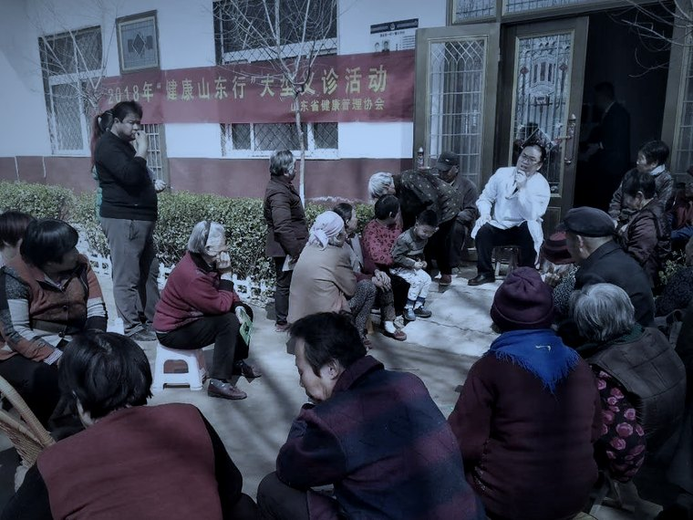
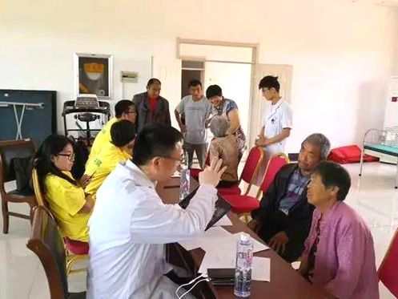
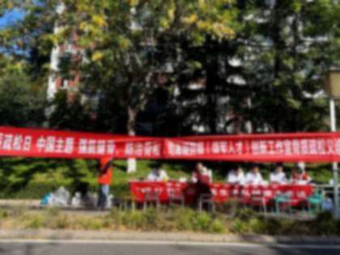

01 / 误区
这四个说法，正在耽误你爸妈
01
“不疼了就好了”
疼痛缓解≠骨折愈合≠骨质疏松被治疗。停药、停随访，风险就回来了。
02
“补钙就够了”
钙与维 D 是原料，不是治疗。确诊骨质疏松需要规范抗骨松药物。
03
“手术做完就没事了”
手术处理的是这一节椎体，其余椎体仍在疏松。术后抗骨松治疗是必须项。
04
“年纪大了不敢动”
长期卧床会加速骨量流失与肌力下降，反而更容易再骨折——要动，但要有方法。
02 / 用药
骨质疏松的药，为什么不能“不疼了就停”
抗骨质疏松药能在用药期间把骨折风险压下来，但停药后骨量会回落。它像高血压、糖尿病一样，是长期管理，而不是“疗程结束”。
这项制度叫骨折联络服务（FLS）：主动找到患者、评估、启动治疗、长期随访。大型队列显示，标准化的 FLS 与再骨折风险降低约 10%–13%、全因死亡率降低约 15%–18% 相关（观察性数据，提示关联而非因果）。
03 / 康复
“躺着养”，可能是最伤骨的养法
这里说的是没有期限的长期卧床。急性期必要的短期休息与支具保护仍然成立。
01
骨量掉得更快
不承重，骨量流失加速；本来就在疏松的骨头变得更脆。
02
肌肉跟着萎缩
卧床一两周，下肢肌力就明显下降；肌力越差，越容易跌倒。
03
心肺和情绪一起垮
长期卧床易并发肺部感染、血栓、便秘，情绪也明显低落。
1
疼痛可控后尽早开始个体化运动，不是等到完全不疼才动。
2
练什么腰背伸肌训练、有氧运动、平衡训练。
3
避免什么腰部扭转、弯腰搬重物。
4
进度谁定由医生按骨折稳定性与疼痛决定，不自行加量。
躺着也能练的第一个动作：踝泵每小时 5–10 次
脚尖慢慢勾到最大，停 3–5 秒；再绷到最大，停 3–5 秒。小腿肌肉一收一放，像泵一样把血往上推—— 这是卧床期间预防下肢静脉血栓、延缓肌肉萎缩最省事的动作，躺着、坐着都能做。
已有下肢血栓、腿肿疼痛，或医生要求术后制动时，先问医生再练。
04 / 闭环
怎么查、谁来管到底
双能 X 线骨密度（DXA）是判断骨质疏松的标准方法。但查出来只是起点——真正重要的是把“筛查—诊断—治疗—随访”串成闭环。








1
居家问卷量身高、数疼痛天数、回忆有没有轻微一跌就骨折。
2
社区初筛村卫生室 / 社区中心做初筛，达阈值上转。
3
三级医院定方案专科评估，决定保守、微创或开放，同时启动抗骨松治疗。
4
回社区长期随访用药、复查、防跌倒，长期跟进——这才叫管到底。
如果只做一件事：带他们查一次骨密度，然后问一句“现在还在治吗”。